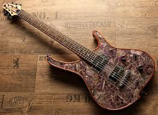

Welcome to My Guitar website
Here you can find information about my top 5 favuorite guitars!
______________________________________
I have chosen these guitars because of their unique features/looks, sound quality, and overall playability.
Each guitar has its own distinct character and is suitable for different playing styles and genres of music.